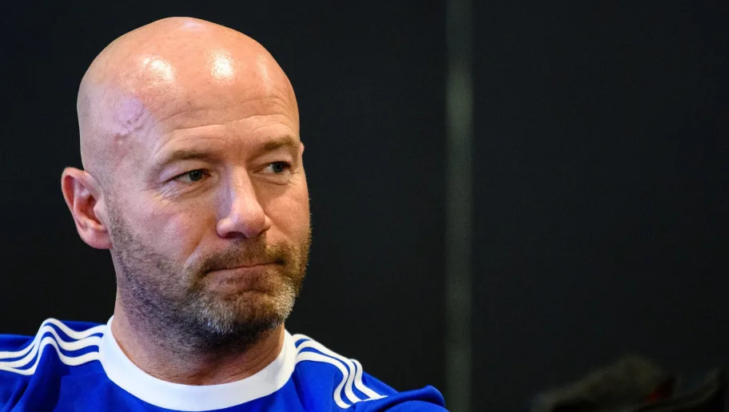

My favorite - Alan Shearer
One of England’s greatest ever strikers, he is still the Premier League and Newcastle United’s record goalscorer.
His career started at Southampton where he scored a hat-trick on his debut. He moved to Blackburn Rovers where his goals helped them to win the Premier League title in the 1994-95 season. A world record £15m transfer fee saw him return to the north-east and Newcastle United where he stayed until he retired in 2006.
Alan was capped 63 times for England and scored 30 goals. He was named PFA Player of the year twice.
He now has a highly successful media career working for the BBC, Five Live and the Premier League covering the Premier League and FA Cup. He is an ambassador for Speedflex, a high intensity cardio and resistance training concept and alongside his work for his own Alan Shearer Foundation he supports the Sir Bobby Robson Foundation, CHUF and the NSPCC.
Alan is an accomplished 6 handicap golfer and Callaway ambassador and founder member at Close House Golf Club in Newcastle.